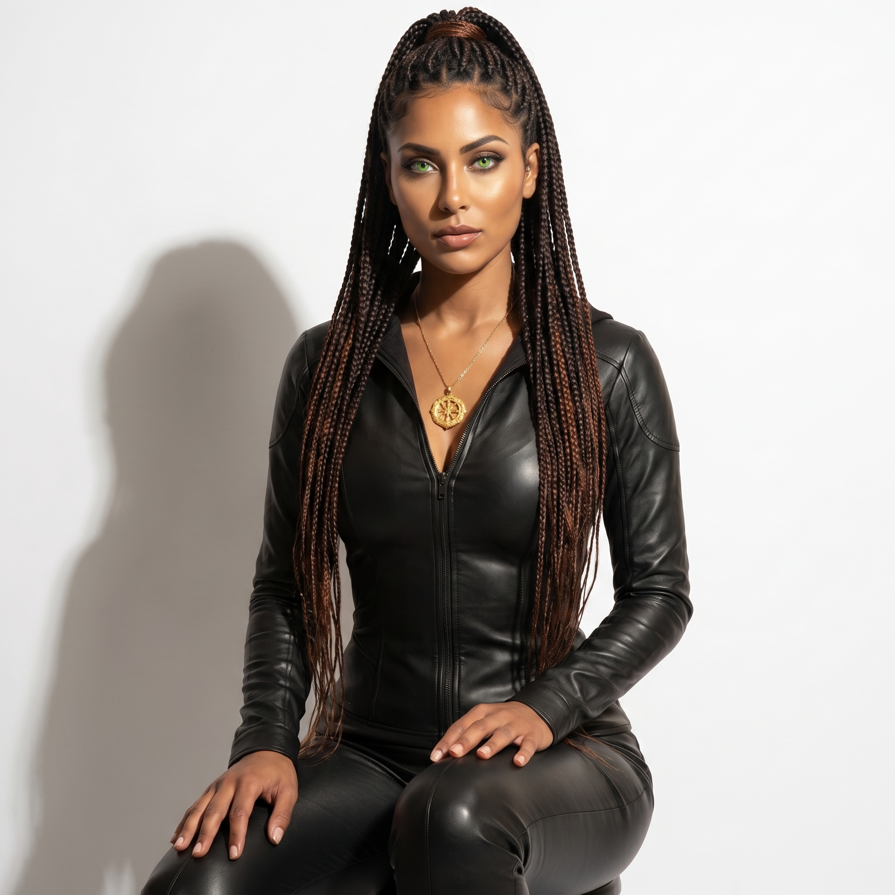
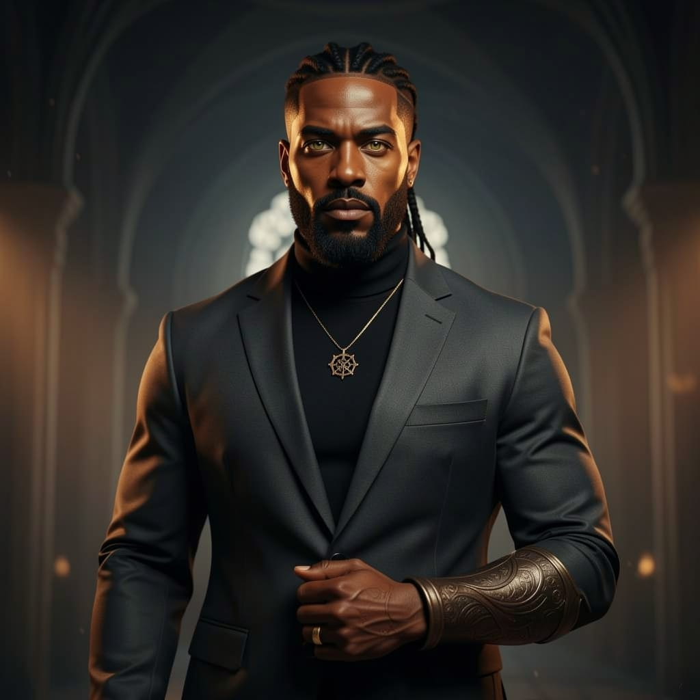
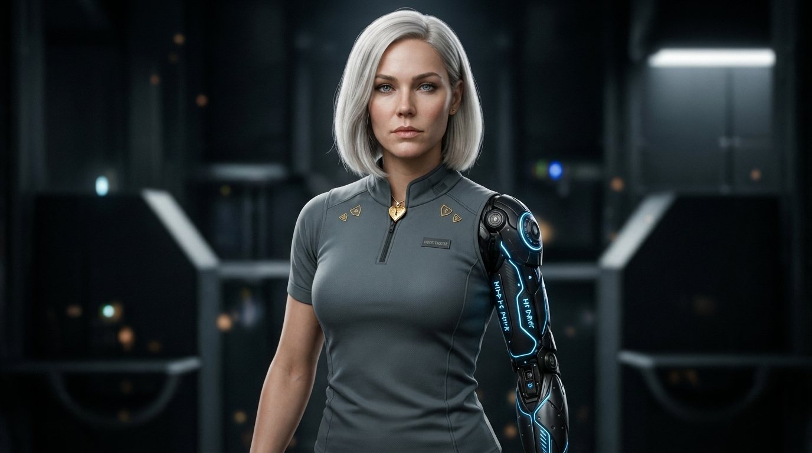
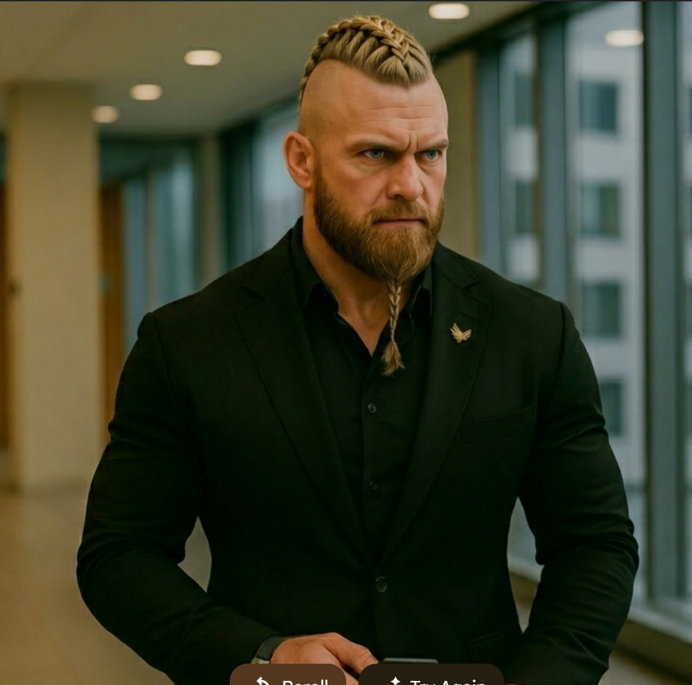
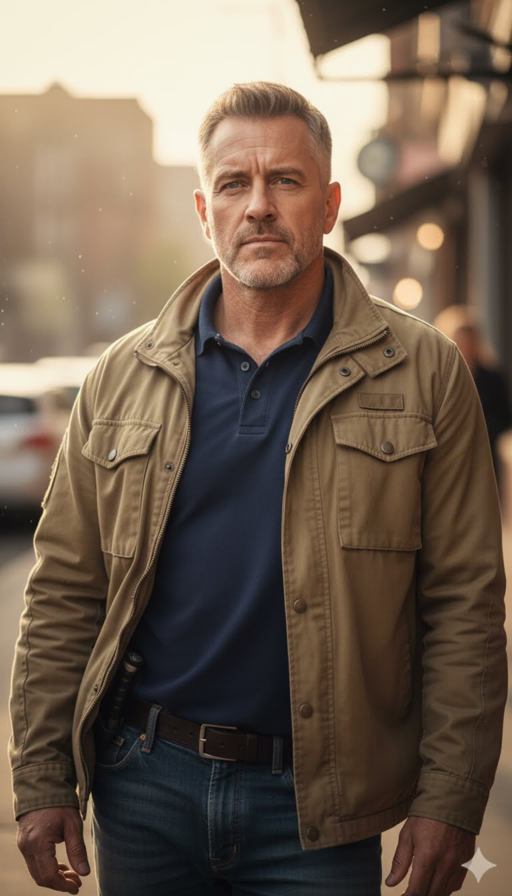
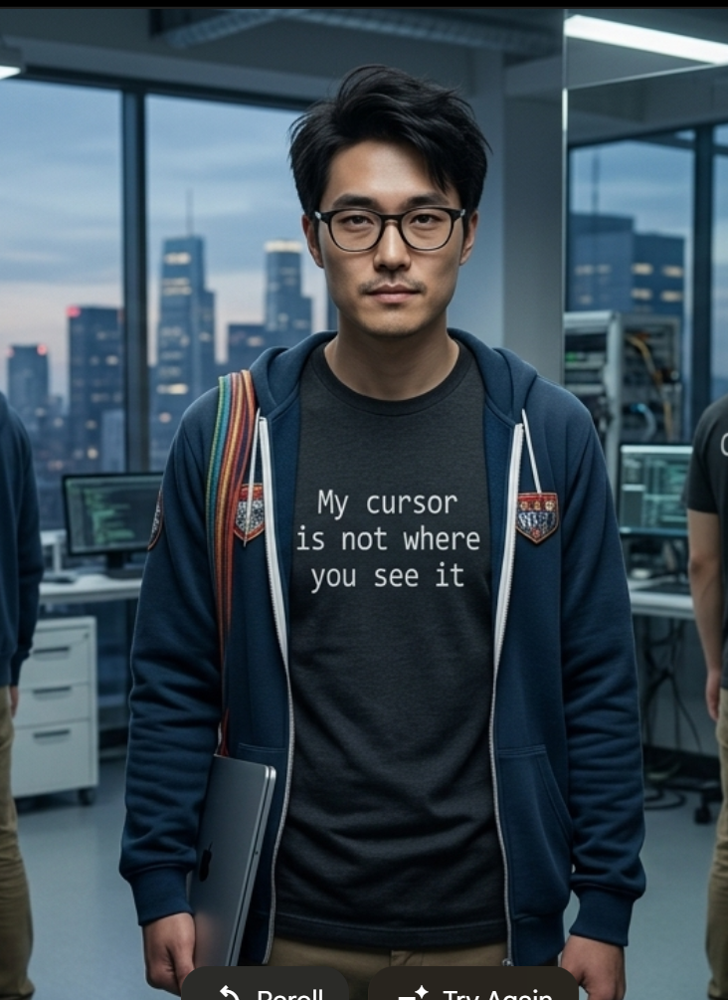
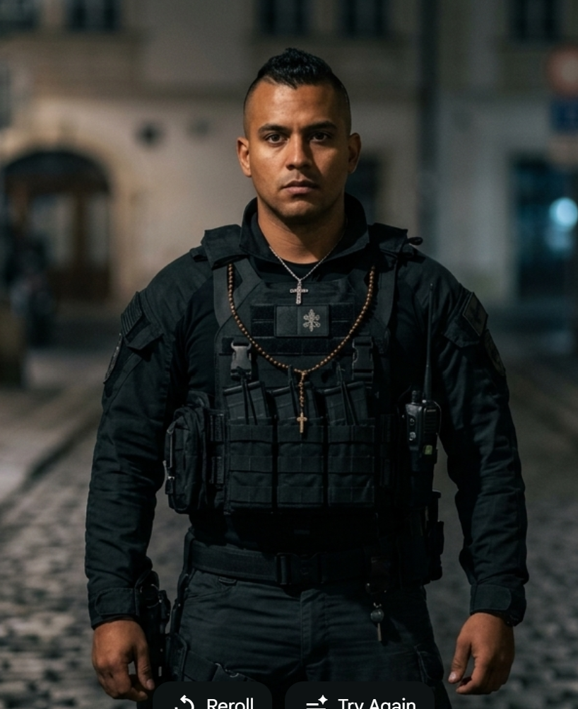

The People of the EPF Verse
Immortals and operatives. Warriors and analysts. Each shaped by centuries of conflict, loyalty, and the particular weight of knowing too much about what the world really is.

Eden FoundationPre-Pangean Alpha · Co-Founder, Eden Philanthropic Foundation
Eva Eden is the emotional core of the Foundation and the series itself. Her public persona radiates warmth through a calm, gentle presence that can carry through vast spaces. She is universally beloved — and she uses that love as both shield and instrument.
In private, with Ado, her voice transforms into playful, loving banter punctuated by Italian endearments. When threatened or protecting others, it sharpens into fierce command. Her telepathic bond with Ado — forged over two millennia — is the deepest relationship in the EPF Verse. She is not soft. She is warm, which is harder to be and far more dangerous to oppose.

Eden FoundationPre-Pangean Alpha · Co-Founder, Eden Philanthropic Foundation
Adamocles Eden is the embodiment of ancient wisdom and protective strength. His speech is economical — a man who has lived long enough to know that most words are wasted. He communicates primarily through mental bonds and quiet gestures, and when he does speak formally, his voice carries the weight of the centuries he has walked through.
His accent is described as deep English with a North African tinge acquired over centuries of living. He frequently uses Latin phrases in formal speech, and his verbal interactions often trail off mid-sentence, allowing Eva to complete his thoughts — a testament to a bond that runs deeper than language.
Former SAS · Foundation Field Operative
Cole is the series' most immediately readable character and one of its most emotionally complex. His thick Cockney accent and dark, deflecting humor are front-facing armor — and like all good armor, they were forged from something that needed protecting. A former SAS operative carrying the weight of a past betrayal, he found his way to the Foundation through Eva's particular brand of obstinate belief in the redeemable.
His sobriety is central to his arc — not as a resolved backstory element, but as an ongoing practice of choosing to be someone different than who the worst moments of his life made him. He is irreverent in crisis, fiercely loyal when it matters, and will never, under any circumstances, stop talking.

Intelligence DivisionFoundation Intelligence · Cybernetic Arm · Traumatized Analyst
Sullivan is professional competence as armor. Her communication is clipped, her delivery sharp, and her focus relentlessly operational. The cybernetic arm — its servos whirring under stress, her fingers drumming consoles in moments of anxiety — is a constant physical tell that betrays the interior life she works hard to keep out of the room.
She has lost teams. She carries those losses without dramatizing them. Her maternal warmth emerges almost exclusively with Ally — soft nicknames, a gentler register, a brief visibility of who she is when she is not at war. Everyone else gets the Deputy Director. Ally gets Judith.

Combat DivisionNorwegian Warrior · Raised by Eva and Ado
Bors was orphaned before he could speak and adopted by Eva and Ado at age one. He calls them Ma and Far — Mother and Father — and means it in every sense that word carries. He is the only member of the team who has known the Edens his entire life, which makes him simultaneously the most loyal and the most exposed to what it costs to love two people who cannot die while you are mortal.
He is a warrior with a craftsman's sensibility — methodical, precise, built to last. His Norwegian accent is thick and musical. His humor is dryer than the others', delivered with minimal inflection and maximum effect. He does not perform his loyalty. He simply lives it.
In Book Two, Bors was killed in combat by Il'Shihane during the Antarctic mission, and brought back through the Foundation's Phoenix Protocol, the first and only confirmed resurrection from clinical death the system has ever produced. He emerged enhanced: increased endurance, accelerated healing. The experience changed him. It did not soften him. He is married to Nilsa Billkesdatter, and the two are now proud parents to a newborn son, making Eva and Ado grandparents for the first time.
UC Berkeley · Night Lords Authority
The Foundation's foremost academic authority on the Czech Night Lords. Prague isn't a research trip for her, it's personal ground. Her expertise turned a classified faction file into a briefing the Foundation trusts completely.
Foundation Operative
Mia operates in the spaces where precision matters more than firepower. Stationed at Foundation HQ in New York, she appears in the anthology The Travelers alongside Cole — two people who keep the machinery running while the Edens are in the field. Quick-witted and difficult to fool.

Field OperationsDillon Arthur MacMillan · Former CIA
Mac came into the Foundation sideways — through a harrowing Night Lords encounter in Prague that Eva witnessed firsthand. Former CIA. His first-hand knowledge of the vampire operations and supernatural underground made him immediately valuable. Eva saw something else in him worth the risk of recruitment.

Foundation TechFoundation Technology Lead
The Foundation's technology genius. Responsible for Sullivan's cybernetic arm, the MAPC, and the advanced gear that keeps the field team functional against threats that no conventional military has prepared for. Initially shy, Kit found his place in the Foundation family completely — and the Foundation found its technical backbone in him.

Field TeamTactical Operative
Gabriel brings a complicated past and uncompromising discipline to every operation. His tactical precision is matched by an emotional depth he rarely allows to surface — but when it does, it changes the room.
Retired Staff Sergeant · WWII Veteran
One of the oldest human allies the Foundation has. Antonov's connection to Ado and Eva stretches back to World War II — a relationship that predates the Foundation's modern form and provides historical context and intelligence that no active field operative can match. He represents what the Foundation ultimately exists to protect: people who keep going.
Nilsa Billkesdatter · Ally Sullivan
Nilsa, Bors's wife and mother of their newborn son, is what Bors fights to return to. Allesandra ("Ally"), Sullivan's daughter, is what Sullivan fights to protect. These two women are the human heart behind two of the series' most formidable operatives. Eva's maternal warmth reaches both of them directly.